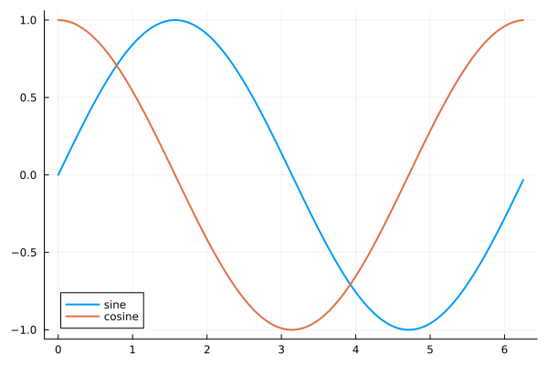

Exercises
So far, we use only the standard library that is shipped with Julia. However, the standard library provides only basic functionality. If we want to get additional functions, we have to use extra packages. For example, there is a Plots.jl package that allows us to create plots. Packages can be installed via Pkg REPL. To enter the Pkg REPL from the Julia REPL, we have to press the ] symbol. Then the Plots package can be installed as follows
(@v1.5) pkg> add PlotsIf we install an additional package, we have to use the using keyword to load the package, and then we can start using it. For example, we can use the Plots package to visualize the sin and cos functions as follows
using Plots
x = 0:0.01π:2π
plot(x, sin.(x); label = "sinus", linewidth = 2)
plot!(x, cos.(x); label = "cosinus", linewidth = 2)
There will be a whole section about the Plots package later in the course. However, we need some basic functionality to visualize the outputs of the following exercises.
Every programmer should be able to rewrite pseudocode to actual code. The goal of this exercise is to rewrite the following pseudocode

The given pseudocode describes how to compute the Julia set for the following function
\[f_c(z) = z^2 + c\]
where $c \in \mathbb{C}$ is a complex parameter. To test the resulting code, try the following settings of input parameters
- $x$ is a vector of 1500 evenly spaced numbers from
-1.5to1.5. - $y$ is a vector of 1000 evenly spaced numbers from
-1to1. - $c = - 0.4 + 0.61 \cdot i$
- $R = 2$
- $N = 1000$
Use the code given below to plot the resulting matrix $A$
using Plots
heatmap(A;
c = :viridis,
clims = (0, 0.15),
cbar = :none,
axis = :none,
ticks = :none
)Solution:
Firstly, we have to define all input parameters
c = - 0.4 + 0.61im
R = 2
N = 1000
L = 1500
K = 1000The second step is to define vectors x and y. Since we know that these vectors contain evenly spaced numbers, and we also know the starting point, the stopping point, and the length of the vectors, we can use the range function to generate them
x = range(-1.5, 1.5; length = L)
y = range(-1.0, 1.0; length = K)
nothing # hideThe next step is to define the A matrix full of zeros. This step can be done simply by using the zeros function
A = zeros(K, L)Now, we can rewrite the for loops from the given pseudocode. It is possible to rewrite the pseudocode in an almost identical way. However, in many cases, the code can be simplified. For example, we can use the shorter syntax for writing nested for loops as follows
for k in 1:K, l in 1:L
z = x[l] + y[k]*im
for n in 1:N
z = z^2 + c
if abs(z) > R^2 - R
A[k, l] = n/N
break
end
end
endFinally, we can use the code provided in the description of the exercise to visualize the matrix A
using Plots
heatmap(A;
c = :viridis,
clims = (0, 0.15),
cbar = :none,
axis = :none,
ticks = :none,
size = (800, 600),
)In the above exercise, we rewrote the pseudocode to the actual Julia code. However, the resulting code is not written in the best possible way. In this exercise, we will try to improve the central part of the code, i.e., the inner loop. Try to write a function that replaces the inner loop in the code from the exercise above. Use the following function definition
function juliaset(z, c, R, N)
???
return ???
endwhere $z, c \in \mathbb{C}$, $R \in \mathbb{R}$ and $N \in \mathbb{N}$. Try to use the while loop to replace the for loop in the original pseudocode. Visualize the resulting matrix using the same code as in the previous exercise.
Hint: do not forget, that the function should return 0 if n == N and n/N otherwise.
Solution:
As suggested in the exercise description, we will use the while loop because it is more suitable in this case. When using the while loop, we have to define the stopping condition. In this case, we have two conditions:
- maximal number of iterations is
N, - the absolute value of variable
zhas to be smaller or equal toR^2 - R.
These two conditions can be merged together as follows n <= N && abs(z) <= R^2 - R. Inside the while loop, we onlye have to update variables n and z. Altogether the function can be defined in the following way
function juliaset(z, c, R, N)
n = 0
while n <= N && abs(z) <= R^2 - R
n += 1
z = z^2 + c
end
return n == N ? 0 : n/N
endNote that we use the ternary operator to decide which value is returned. With a defined function, we have to define all input parameters as in the previous exercise
c = - 0.4 + 0.61im
R = 2
N = 1000
x = range(-1.5, 1.5; length = 1500)
y = range(-1.0, 1.0; length = 1000)Now we can use nested for loops to create the A matrix. However, it is not the easiest way. It is simpler to use the list comprehension or broadcasting to vectorize the juliaset function
A1 = [juliaset(xl + yk*im, c, R, N) for yk in y, xl in x]
A2 = juliaset.(x' .+ y .* im, c, R, N)In the second case, we have to pay attention to use the correct form of the input. Note that we use transposition of the vector x. Finally, we can call the same code as before to create the same plot
using Plots
heatmap(A1;
c = :viridis,
clims = (0, 0.15),
cbar = :none,
axis = :none,
ticks = :none,
size = (800, 600),
)
Try different values of variable c to create different plots. For inspiration, check the Wikipedia page about Julia set.
- $c = 0.285 + 0.01 \cdot i$

- $c = - 0.835 - 0.2321 \cdot i$

- $c = -0.8 + 0.156 \cdot i$

- $c = -0.70176 + 0.3842 \cdot i$

Animation
It takes a lot of time to create the animation described below, especially when using the default GR backend for the Plots package. The plotting time can be reduced by using a different backend. For example, the PyPlot backend can be used as follows
using Plots, PyPlot
pyplot()Note that the PyPlot package must be installed first. An alternative way is to use the Makie package instead of the Plots package.
It is also possible to create animations using the Plots package. Just for illustration, we will create an animation of Julia sets for c values defined as follows
\[c_k = 0.7885 \exp \{ k \cdot i \}, \qquad k \in \left [\frac{\pi}{2}, \frac{3\pi}{2} \right ]\]
The vector of all values c can be created using the combination of the range function and broadcasting in the following way
cs = 0.7885 .* exp.(range(π/2, 3π/2; length = 500) .* im)We use the length keyword to specify the length of the resulting vector. The only thing that we have to do to create an animation is to use the for loop in combination with the @animate macro as follows
anim = @animate for c in cs
A = juliaset.(x' .+ y .* im, c, R, N)
heatmap(A;
c = :viridis,
clims = (0, 0.15),
cbar = :none,
axis = :none,
ticks = :none,
size = (800, 600),
)
end
gif(anim, "juliaset.gif", fps = 20) # save animation as a gifNote that the code inside the loop is the same as we used in the previous exercises. The result is the following animation